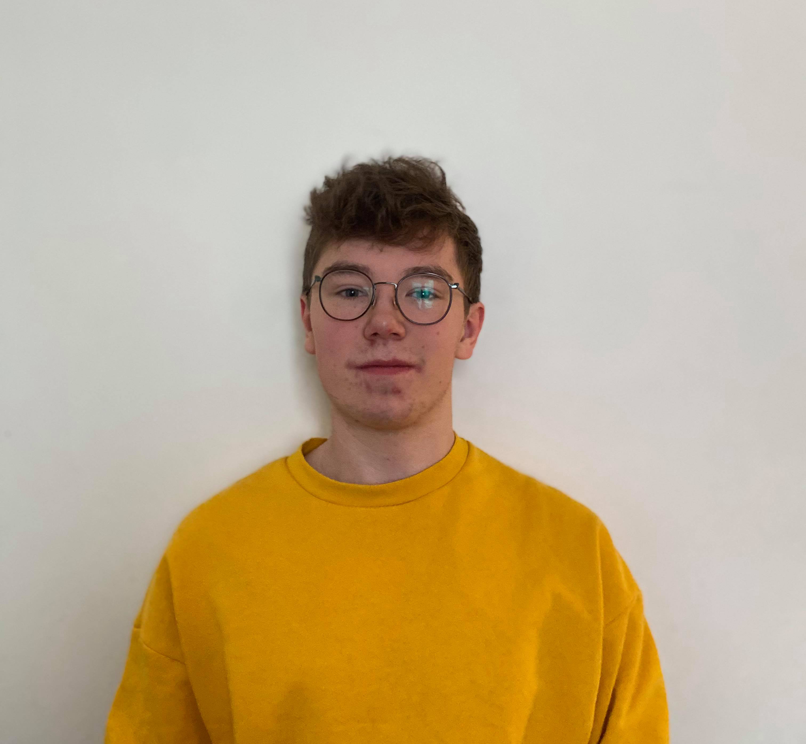
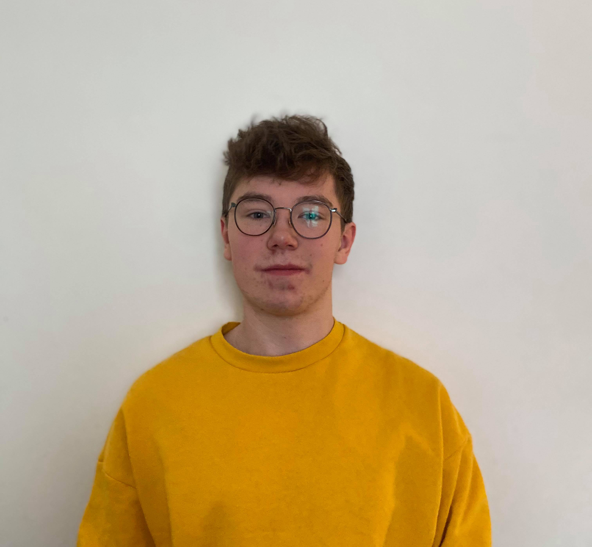

About us
Team Redivivus
Our team had its origin during the mentor week at the start of the semester. All of us being students taking computer science at Oslo Metropolitan University. We soon became friends and started exchanging ideas and opinions about pretty much everything. After being given our first obligatory assignment, concerning the UN's sustainable development goals, it naturally came up during conversation what we would like to improve and how we would do it, given the chance. It did not take long for all three of us to realize that climate change, and improving the environmental situation was something all of us were particularly interested in. With this in mind, we set out to develop a solution to really make a change in todays society, and get everybody on board with recycling.
Thea is 19 years old, and recently moved from her home in Arendal to study computer science at OsloMET. She cares greatly for the environment, and has even been a speaker at a science-conferece in Russia, debating climate change and recycling, as a representative for Norway. Thea belives that everyone deserves the same opportunities no matter where in the world they are. Therefore, we should all strive to not only maintain our planet's health for ourselves, but improve it for the people to come. She also belives that to grow means to constantly look for ways to do what you couldn't yesterday, and to reflect on both mistakes and successes. There's no use looking back in time and blaming others, so her vision is to learn from past mistakes, but not dwell on them. After all, the future requires forward thinking, not hindsight.
Nicolay is 26 years old hailing from Bærum, just outside Oslo. He has a B.Sc. in economics and business administration, and is currently studying computer science along with the rest of the team. If it is one thing Nicolay believes, then it is that life is about improvement. He is a fan of working out both mind and body, and believes that in order to fully enjoy life one needs a constant drive to better oneself. This is one of the things driving him to further his studies, and also what makes him burn so thoroughly for the task of reaching the sustainable development goal through improvement.
Storm Villenfeldt Viken kan skrive sin egen bakgrunn og tekst her, for den kan ikke jeg.

 

Nicolay Alsing
Thea Haugen
Storm Viken
Header
And that's Team Redivivus. We hope that by reading about us, you were inspired, in some way or another, to take action for the sake of either the environment or yourself. Together, we can do this!